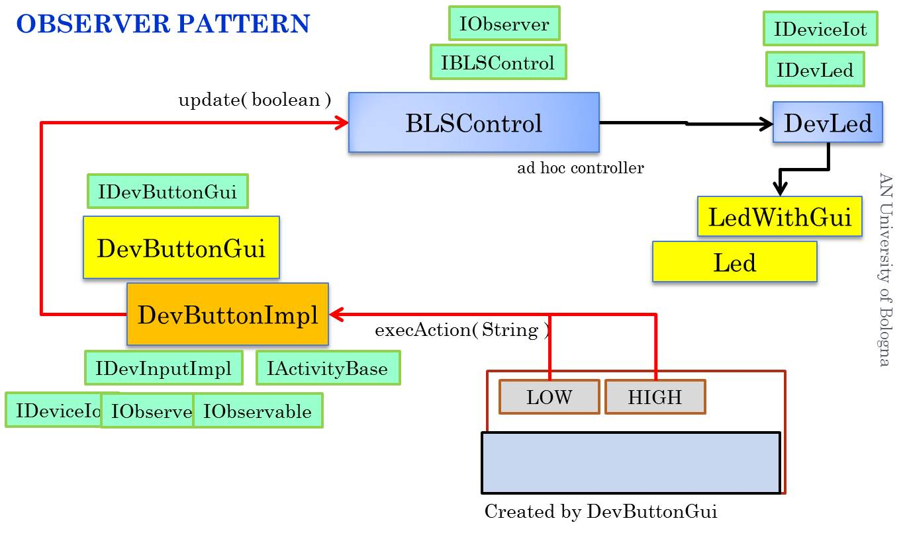
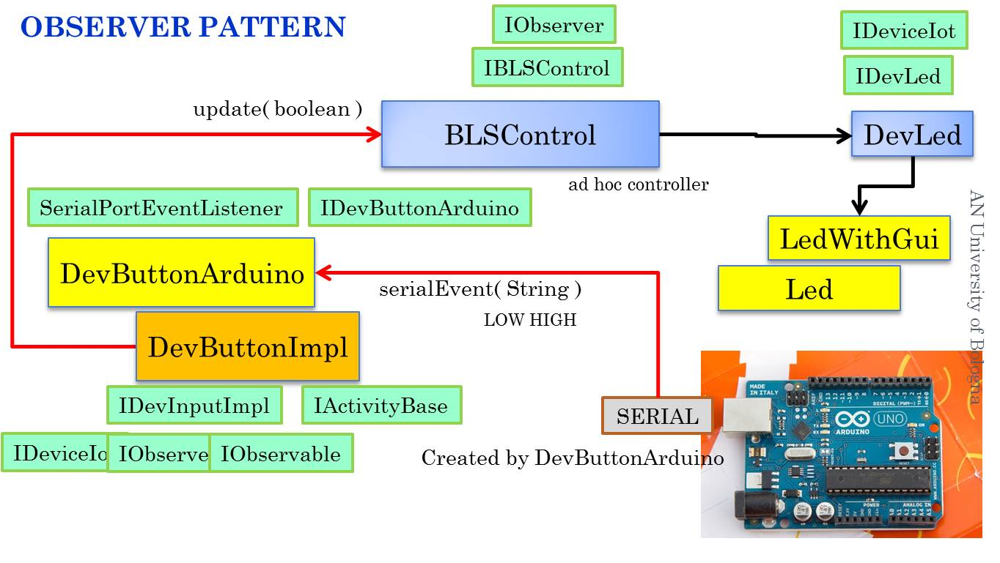

ButtonLed prototypes
Button as GUI
The program BLSWithGuiMain defines a prototype based on concrete GUI devices (Button and Led) by using the defined in the project it.unibo.envBaseAwt. Physical Button connected to Arduino
The program BLSWithGuiMain High levle Button (BRIDGE pattern)
The program BLSHighLevelMain